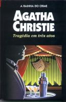

Tragédia em Três Atos
Three Act Tragedy
Durante uma festa na casa do famoso ator Sir Charles Cartwright, o reverendo Stephen Babbington cai morto, envenenado, diante dos convidados. Este crime cruel é apenas o primeiro ato de uma tragédia macabra, que envolverá ainda outros dois misteriosos assassinatos, sempre por envenenamento. Três grandes desafios para o genial detetive Hercule Poirot, que rouba a cena com sua arguta inteligência, para arrancar a máscara sob a qual se esconde o insuspeitado assassino.